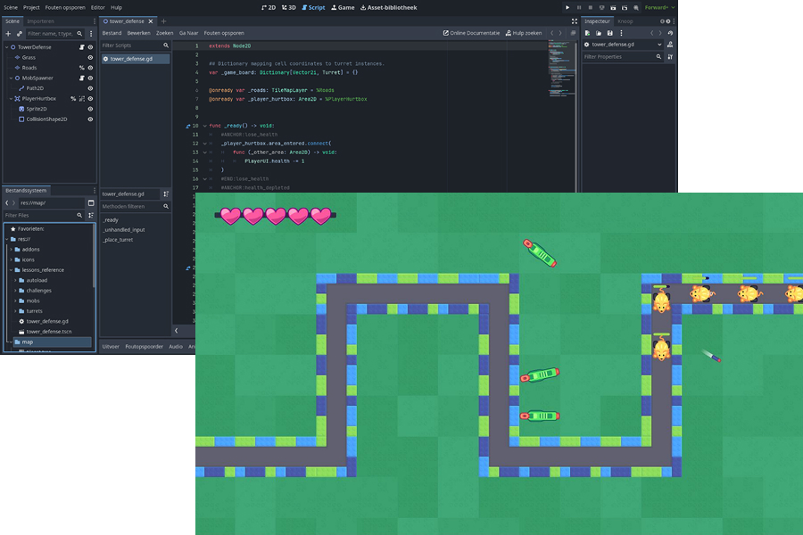
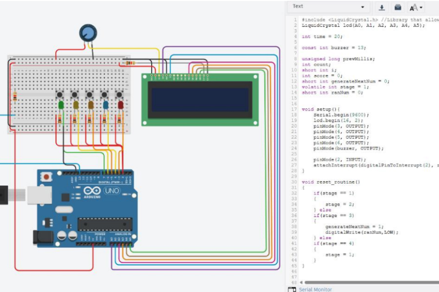
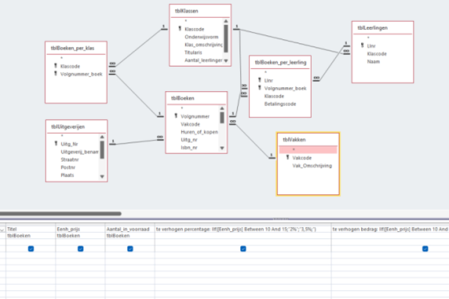

APDA: Applicatieontwikkeling & databeheer
De originele informaticarichting; je leert hier over elk aspect van IT.
De originele informaticarichting; je leert hier over elk aspect van IT.
APDA is de klassieke informaticarichting, wat vroeger gewoon "informatica" noemde. Hier leer je programmeren, data verwerken, databases maken, netwerken begrijpen, hardware beheren en cybersecurity toepassen.
APDA is ideaal voor leerlingen die graag logisch denken, problemen oplossen en creatief aan de slag gaan met technologie.
Je hoeft geen computerexpert te zijn om te starten — interesse, motivatie en een gezonde dosis nieuwsgierigheid zijn het belangrijkst!

We leren hoe je websites goed structureert; wat zet je waar om ervoor te zorgen dat bezoekers een optimale ervaring hebben?
We structureren de websites met moderne HTML en laten deze er mooi en dynamisch uitzien met CSS.

NIEUW! Met GDScript/Godot leer je games ontwikkelen! Need MORE

We leren hoe we websites interactief kunnen maken met JavaScript.
We zorgen er ook voor dat deze functioneel zijn met behulp van PHP. We doen dit op een veilige en gestructureerde manier a.d.h.v. een meerlagige aanpak.

Met JavaScript leren we native appsNative: Apps op besturingssystemen zoals Windows, webapps en games ontwikkelen en testen.

C++...Need content..........

Pc’s assembleren, onderdelen vervangen en problemen oplossen. Need more

NEED CONTENT.
Netwerken opbouwen, routers configureren en verbindingen testen. Need more
Veilig omgaan met systemen, gebruikers en online gevaren herkennen. Need more

Leer hoe je databases ontwerpt, beheert en optimaliseert. Need more
Dient een beschrijving te krijgen. Zeggen dat de leerlingen 2x hetzelfde vak krijgen lijkt me misschien niet het beste idee? Desondanks is dit een boon.

Ontdek alles over onze opleidingen en ontmoet onze leerkrachten en studenten. Misschien kan je al eens proeven van wat we te bieden hebben?
Zaterdag 30 Mei: 13u30 - 17u30
Begijnhoflaan 1, 9200 Dendermonde
Tel: 052 25 88 10
Ps: Je kan je tot 03/07 en vanaf 17/08 inschrijven op onze school. Wees er snel bij en verzeker je plaats!

In het 6e jaar kunnen leerlingen 2 weken lang stage lopen in Malta om praktijkervaring op te doen binnen een internationale IT-omgeving. Dit wordt aangevuld met tal van leuke activiteiten.
Leerlingen krijgen de kans om hun technische vaardigheden te testen en te verbeteren door deel te nemen aan de hersteldienst van de school. Ze leren hoe ze problemen kunnen identificeren en oplossen, en hoe ze efficiënt kunnen werken in een team.
Op het einde van het eerste schooljaar maken we in een periode van 2 maand een website van begin tot eind waarbij we dit zo professioneel mogelijk aanpakken. We verzinnen, schrijven, tekenen, fotograferen, ontwerpen, illustreren en programmeren (bijna) alles zelf!
Leerlingen krijgen de kans om hun creativiteit en programmeervaardigheden te ontwikkelen door het maken van spelletjes. Ze leren hoe ze concepten kunnen omzetten in interactieve ervaringen.

We bezoeken doorheen de twee jaren meerdere mogelijke werkplekken om een beter beeld te krijgen van de sector en de verschillende carrièremogelijkheden. We doen workshops en krijgen presentaties van professionals.

We bezoeken doorheen de twee jaren meerdere hogescholen om een beter beeld te krijgen van de verschillende studie- en carrièremogelijkheden.

Elk schooljaar organiseren we verschillende uitstappen (zowel binnen- als buitenland) om de leerlingen een breder perspectief te geven.

De projecten waren uitdagend en namen veel tijd in beslag maar het was altijd leuk wanneer iets werkte na lang zoeken. Ferre INFO '23-24
Wat zijn je favoriete herinneringen aan je tijd bij GO! Talent?
De stage in malta is 1 van mijn favoriete herinneringen. Het is de eerste keer dat je meedraait in een werkfunctie in een ander land. Zeer unieke ervaring en dit maakt het ook zo onvergetelijk.
De pauzes waar je praat met je vrienden waren altijd leuk en fijn om op terug te denken.
Wat is je favoriete project dat je tijdens je opleiding hebt gedaan?
Mijn favoriete project was websites maken en designen. Dit was meer dan 1 project maar ze vallen allemaal onder dezelfde categorie. De projecten waren uitdagend en namen veel tijd in beslag maar het was altijd leuk wanneer iets werkte na lang zoeken.
Welke vaardigheden heb je geleerd die je nu nog steeds gebruikt?
Het meeste dat ik geleerd heb uit mijn IT vakken gebruik ik nu nog steeds op de hoge school en in het werkveld. Ook probeer ik in mijn vrije tijd nog te coderen.
Heb je tips voor toekomstige studenten?
De meeste leerkrachten doen hun best om iedereen te helpen maar soms heeft dat wat tijd nodig. Goede communicatie en geduld is dus belangrijk. Als er iets is praat je er best over met 1 van de docenten of leerlingbegeleiders.
Zou je GO! Talent aanraden aan anderen? Waarom of waarom niet?
Als je een IT richting gaat doen in GO! Talent kan ik dit zeker aanraden. In deze richting vind je alle coole leerkrachten zoals Mr. Van Oudenhove, Mr. Fiers, en Mw. Matthys (en voorheen ook Mr. Van Maelsaeke).
Ferre (INFO '23-24)
Mijn favoriete herinneringen op GO! Talent zijn de lessen samen met mijn vrienden Yani APDA '24-25)
Wat zijn je favoriete herinneringen aan je tijd bij GO! Talent?
Mijn favoriete herinneringen op GO! Talent zijn de lessen samen met mijn vrienden. Ik heb veel nieuwe vrienden gemaakt waarmee ik nu na het afstuderen nog mee overeen kom. De meeste ICT lessen waren ook heel plezant, we konden veel lachen tijdens die lessen met leuke leerkrachten.
Wat is je favoriete project dat je tijdens je opleiding hebt gedaan?
De internationale stage naar Malta, ik heb uit die stage veel bijgeleerd, de activiteiten die we daar gedaan hebben waren ook heel leuk. Er was elke dag wel iets te doen, zowel in de ochtend als in de avond.
Welke vaardigheden heb je geleerd die je nu nog steeds gebruikt?
De vaardigheden die ik nu nog gebruik zijn meer aan de ICT kant, onder andere mijn kennis over digitale technologieën, software en hardware effectief kunnen gebruiken en beheren. Ik heb ook mijn algemene vaardigheden verbeterd, o.a. sociaal, communicatie, zelfstandigheid, samenwerken, etc...
Heb je tips voor toekomstige studenten?
Een paar tips die ik zou geven aan toekomstige studenten zijn zeker: maak vrienden in klas. Je ervaring op school gaat 100% leuker zijn als je niet alleen in de klas zit. Nog een tip die ik zou geven is: geen zorgen maken op school. Alles komt goed uit eindelijk goed.
Zou je GO! Talent aanraden aan anderen? Waarom of waarom niet?
Ik zou GO! Talent uiteraard aanraden aan anderen. GO! Talent is een school met veel vakken, je hebt heel veel keuzes om te studeren wat je wilt. En als je een probleem hebt, dan heb je veel leerkrachten en begeleiders om je te helpen, ze staan allemaal open voor u te steunen.
Yani (APDA '24-25)| Vak | Uren 5e | Uren 6e |
|---|---|---|
| Databases/SQL | 2 | 2 |
| Digital skills & theories | 1 | 1 |
| ICT & Electriciteit | 0 | 1 |
| Game Development (GDScript) | 1 | 0 |
| Hardware | 2 | 2 |
| JavaScript (web, apps, games) | 0 | 2 |
| Netwerken | 0 | 2 |
| OLB (opleiding aan HO Gent) | 0 | 2 |
| PHP (web) | 0 | 2 |
| Softwareontwikkeling (C++) | 3 | 2 |
| VB (Hoe noemt dit nu?) | 0 | 2 |
| Webtechnieken (HTML & CSS) | 3 | 0 |
| Wiskunde | 1 | 1 |
| Totaal | 32 | 32 |
| Vak | Uren 5e | Uren 6e |
|---|---|---|
| Aardrijkskunde | 0 | 1 |
| Artistieke expressie | 0 | 1 |
| Burgerschap/Geschiedenis | 2 | 1 |
| Economie | 1 | 1 |
| Engels | 2 | 2 |
| Frans | 2 | 2 |
| Levensbeschouwing | 2 | 2 |
| Lichamelijke opvoeding | 2 | 2 |
| Natuurwetenschappen | 1 | 1 |
| Nederlands | 3 | 2 |
| Talentcoach | 1 | 1 |
| Wiskunde | 2 | 2 |
| Totaal | 32 | 32 |